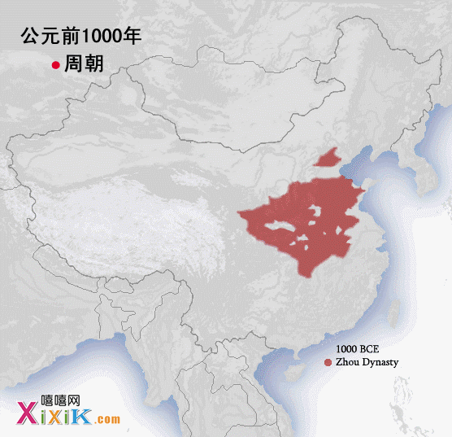
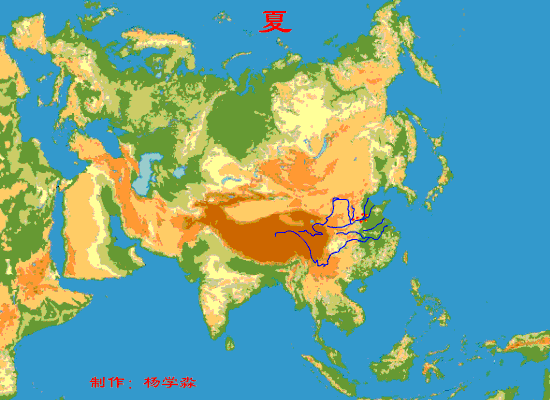
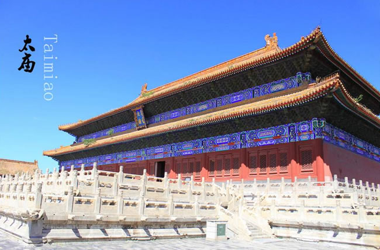
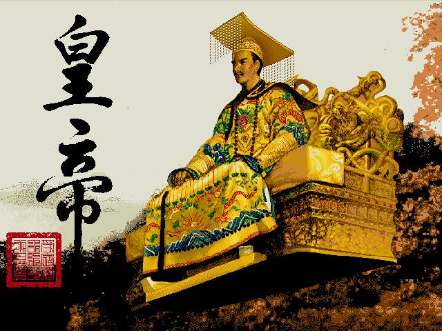

图表：中国历史朝代演进表（查看另一个版本）
>>>> 各朝各代 · 时间长度表 <<<< 远古 [旧石器时代 ~ 新石器时代 ~ 三皇五帝] 夏 [-2070 ~ -1600]：大禹，启 商 [-1600 ~ -1046]：商纣王，苏妲己 # 西周（276 年）[-1046 ~ -770]：武王伐纣,姜子牙，西周末年·周幽王烽火戏诸侯 # 春秋（295 年）[-770 ~ -475]：春秋五霸 # 战国（254 年）[-475 ~ -221]：大争之世，诸子百家·百花齐放百家争鸣 * 秦朝（15 年）[-221 ~ -206]：秦始皇嬴政,《大秦帝国》 $ 西汉（约 200 年）[-200 ~ 0]：汉武帝刘彻(加强集权,开丝绸之路) $ 东汉（约 200 年）[0 ~ 200]：东汉末年分三国 * 三国（约 60 年）[200 ~220~ 260]：魏蜀吴三足鼎立 $ 两晋（约 150 年）[265 ~ 420]：三家归晋，东晋诗人陶渊明《桃花源记》 $ 南北朝（约 200 年）[400 ~ 600] # 隋唐（约 300 年）[600 ~ 900]：唐太宗李世民(三省六部制,贞观之治)，李白,杜甫,白居易 * 五代十国（约 60 年）[900 ~ 960]：南唐后主李煜 # 两宋（约 300 年）[960 ~ 1276]：宋太祖赵匡胤，靖康之耻，岳飞·满江红,《一本书读懂宋朝》 $ 元朝（约 100 年）[1271 ~ 1368]：元太祖成吉思汗(铁木真)，元世祖忽必烈 # 明朝（约 276 年）[1368 ~ 1644]：明太祖朱元璋，《明朝那些事儿》 # 清朝（约 300 年）[1616 ~ 1911]：康雍乾,纳兰性德,纪晓岚，慈禧,鸦片战争,八国联军侵华战争 * 中华民国（约 40 年）[1912 ~ 1949]：国父孙中山,《走向共和》，军阀割据，国共内战 中华人民共和国（新中国）[1949年·建国]：毛泽东《沁园春·雪》 >>>> 每朝一部历史剧 <<<< 秦——《大秦帝国》 汉——《大汉天子》 晋——无 隋——《隋唐英雄传》 唐——《贞观长歌》 宋——《苏东坡》 元——无 明——《大明王朝1566》 清——《康熙王朝》 中华民国——《走向共和》
图表：中国历史朝代纪年表

动画：中国历史朝代演变史
| 朝代 | 起讫年代 | 都城 | 今地 | 统治民族 | 开国皇帝 | ||
|---|---|---|---|---|---|---|---|
| 三皇五帝：“三皇“指伏羲、燧人、神农，“五帝”指黄帝、颛顼、帝喾、唐尧、虞舜 | |||||||
| 夏朝 | 约前2146-1675年 | 安邑 | 山西夏县 | 华夏族 | 禹 | ||
| 商朝 | 约前1675-1029年 | 亳 | 河南商丘 | 华夏族 | 汤 | ||
| 周朝 | 西 | 约前1029-771年 | 镐京 | 陕西西安 | 华夏族 | 文王姬昌 | |
| 东 | 春秋 | 前770-476年 | 洛邑 | 河南洛阳 | 华夏族 | 平王姬宜臼 | |
| 战国 | 前475-221年 | 华夏族 | 先秦国君世系表 | ||||
| 秦朝 |
前221-207年 来源：中国历史朝代 |
咸阳 | 陕西咸阳 | 华夏族 |
秦国历代国君 始皇帝嬴政 秦朝历代皇帝 |
||
| 汉朝 | 西汉 | 前206-公元8年 | 长安 | 陕西西安 | 汉族 |
太祖刘邦 西汉皇帝列表 |
|
| 新朝 | 9-23年 | 长安 | 陕西西安 | 汉族 | 王莽 | ||
| 玄汉③ | 23年2月~25年9月 |
宛城 洛阳 长安 |
河南南阳 河南洛阳 山西西安 |
汉族 | 更始帝刘玄 | ||
| 东汉 | 25-220年 | 洛阳 | 河南洛阳 | 汉族 |
光武帝刘秀 东汉皇帝列表 |
||
| 三国 | 曹魏 | 220-265年 | 洛阳 | 河南洛阳 | 汉族 | 魏文帝曹丕 | |
| 蜀汉 | 221-263年 | 成都 | 四川成都 | 汉族 | 汉昭烈帝刘备 | ||
| 孙吴 | 222-280年 | 建业 | 江苏南京 | 汉族 | 吴大帝孙权 | ||
| 晋朝 | 西晋 | 265-316 | 洛阳 | 河南洛阳 | 汉族 |
晋武帝司马炎 西晋皇帝列表 |
|
| 东晋 | 317-420 | 建康 | 江苏南京 | 汉族 |
晋元帝司马睿 东晋皇帝列表 |
||
|
十六国 304-439 |
前赵 （汉赵） |
304-318 | 平阳 | 山西临汾 | 匈奴族 | 高祖光文皇帝刘渊 | |
| 319-329 | 长安 | 陕西西安 | |||||
| 成汉 | 306-347 | 成都 | 四川成都 | 巴氐族 | 太宗武皇帝李雄 | ||
| 前凉 | 314-363 | 姑臧 | 甘肃武威 | 汉族 | 高祖明王张寔 | ||
| 后赵 | 319-351 | 襄国 | 河北邢台 | 羯族 | 高祖明皇帝石勒 | ||
| 前燕 | 337-370 | 龙城 | 辽宁朝阳 | 鲜卑族 | 太祖文明皇帝慕容皝 | ||
| 前秦 | 351-394 | 长安 | 陕西西安 | 氐族 | 世宗明皇帝苻健 | ||
| 后秦 | 384-417 | 长安 | 陕西西安 | 羌族 | 太祖武昭皇帝姚苌 | ||
| 后燕 | 384-407 | 中山 | 河北定州 | 鲜卑族 | 世祖成武皇帝慕容垂 | ||
| 西秦 | 385-431 | 苑川 | 甘肃榆中 | 鲜卑族 | 烈祖宣烈王乞伏国仁 | ||
| 后凉 | 386-403 | 略阳 | 甘肃平凉 | 氐族 | 太祖懿武皇帝吕光 | ||
| 南凉 | 397-414 | 西平 | 青海西宁 | 鲜卑族 | 烈祖武王拓跋乌孤 | ||
| 南燕 | 398-410 | 广固 | 山东益都 | 鲜卑族 | 世宗献武皇帝慕容德 | ||
| 西凉 | 407-421 | 酒泉 | 甘肃酒泉 | 汉族 | 太祖昭武王李暠 | ||
| 胡夏 | 407-431 | 统万城 | 陕西靖边 | 匈奴 | 世祖烈武皇帝赫连勃勃 | ||
| 北燕 | 407-436 | 和龙 | 辽宁朝阳 | 高句丽 | 燕惠懿帝高云 | ||
| 北凉 | 397-439 | 张掖 | 甘肃张掖 | 卢水胡 | 太祖武宣王沮渠蒙逊 | ||
| *冉魏 | 350-352 | 邺城 | 河北临漳 | 汉族 | 武悼天王冉闵 | ||
| *西燕 | 384-394 | 长子 | 山西长子 | 鲜卑族 | 济北王慕容泓 | ||
| *西蜀（后蜀） | 405-413 | 益州 | 四川成都 | 汉族 | 成都王谯纵 | ||
|
南北朝 420-589 |
南朝 | 刘宋 | 420-479 | 建康 | 江苏南京 | 汉族 |
宋武帝刘裕 南北朝皇帝列表 |
| 萧齐 | 479-502 | 建康 | 江苏南京 | 汉族 | 齐高帝萧道成 | ||
| 梁梁 | 502-557 | 建康 | 江苏南京 | 汉族 | 梁武帝萧衍 | ||
| 南陈 | 557-589 | 建康 | 江苏南京 | 汉族 | 陈武帝陈霸先 | ||
| 北朝 | 北魏 | 386-534 | 平城 | 山西大同 | 鲜卑族 | 魏道武帝拓跋珪 | |
| 洛阳 | 河南洛阳 | ||||||
| 东魏 | 534-550 | 邺 | 河北临漳 | 鲜卑族 | 魏孝静帝元善见 | ||
| 西魏 | 535-556 | 长安 | 陕西西安 | 鲜卑族 | 魏文帝元宝炬 | ||
| 北齐 | 550-577 | 邺 | 河北临漳 | 鲜卑族 | 齐文宣帝高洋 | ||
| 北周 | 557-581 | 长安 | 陕西西安 | 鲜卑族 | 孝闵帝宇文觉 | ||
| 隋朝 | 581-618 | 大兴 | 陕西西安 | 汉族 |
隋文帝杨坚 隋朝皇帝列表 |
||
| 唐朝 | 618-907 | 长安 | 陕西西安 | 汉族 |
唐高祖李渊 唐朝皇帝列表 |
||
| 五代十国 | 后梁 | 907-923 | 汴 | 河南开封 | 汉族 |
梁太祖朱晃 五代十国皇帝列表 |
|
| 后唐 | 923-936 | 洛阳 | 河南洛阳 | 沙陀族 | 唐庄宗李存勖 | ||
| 后晋 | 936-947 | 汴 | 河南开封 | 沙陀族 | 晋高祖石敬瑭 | ||
| 后汉 | 947-950 | 汴 | 河南开封 | 沙陀族 | 汉高祖刘暠 | ||
| 后周 | 951-960 | 汴 | 河南开封 | 汉族 | 周太祖郭威 | ||
| 前蜀 | 891-925 | 成都 | 四川成都 | 汉族 | 高祖王建 | ||
| 后蜀 | 925-965 | 成都 | 四川成都 | 汉族 | 高祖孟知祥 | ||
| 杨吴 | 892-937 | 扬州 | 江苏扬州 | 汉族 | 太祖杨行密 | ||
| 南唐 | 937-975 | 金陵 | 江苏南京 | 汉族 | 烈祖李昪 | ||
| 吴越 | 893-978 | 杭州 | 浙江杭州 | 汉族 | 武肃王钱鏐 | ||
| 闽国 | 893-945 | 长乐 | 福建福州 | 汉族 | 太祖王审知 | ||
| 马楚 | 896-951 | 长沙 | 湖南长沙 | 汉族 | 武穆王马殷 | ||
| 南汉 | 905-971 | 兴王府 | 广东广州 | 汉族 | 高祖刘龑 | ||
| 南平 | 907-963 | 荆州 | 湖北荆州 | 汉族 | 武信王高季兴 | ||
| 北汉 | 951-979 | 太原 | 山西太原 | 沙陀族 | 世祖刘崇 | ||
| 宋朝 | 北宋 | 960-1127 | 开封 | 河南开封 | 汉族 |
太祖赵匡胤 宋朝皇帝列表 |
|
| 南宋 | 1127-1279 | 临安 | 浙江杭州 | 汉族 |
高宗赵构 宋朝皇帝列表 |
||
| 辽国 | 907-1125 | 皇都 | 辽宁 | 契丹族 | 太祖耶律阿保机 | ||
| 大理 | 937-1254 | 太和城 | 云南大理 | 白族 | 太祖段思平 | ||
| 西夏 | 1032-1227 | 兴庆府 | 宁夏银川 | 党项族 | 景帝李元昊 | ||
| 金朝 | 1115-1234 | 会宁 | 阿城（黑） | 女真族 | 金太祖阿骨打 | ||
| 中都 | 北京 | ||||||
| 汴京 | 河南开封 | ||||||
| 元朝 | 1206-1368 | 大都 | 北京 | 蒙古族 |
元世祖忽必烈 元朝皇帝列表 |
||
| 明朝 | 1368-1644 | 北京 | 北京 | 汉族 |
明太祖朱元璋 明朝皇帝列表 |
||
| 清朝 | 1636-1911 | 北京 | 北京 | 满族 |
清太宗皇太极 清朝皇帝列表 |
||
|
三皇五帝始，尧舜禹相传。 夏商与西，东分两段。 春秋和战国，一统秦两汉。 三分魏蜀吴，二晋前后延。 南北朝并立，隋唐五代传。 宋元明清后，皇朝自此完。 更多：中国朝代歌 |
|||||||
备注：
①根据最新的夏商周断代工程的结论，夏朝应是公元前2070年～公元前1600年，商朝是公元前1600年到公元前公元前1600年～公元前1046年，西周是公元前1046年～公元前771年。当然夏商周断代工程被人讽刺是“系统性编造历史”，“一群老混蛋最后找到的最大的证据是几片远古篱笆遗址”。
②需要说明的是，汉高祖既非刘邦的庙号，也非谥号。作为汉朝开国皇帝，刘邦的庙号为“太祖”，谥号为“高皇帝”。但自汉武帝时代的史学家司马迁开始，称刘邦为“高祖”，后世多沿用之，因此史称“太祖高皇帝”、“汉高帝”或“汉高祖”。
③王莽既无庙号也无谥号，虽然自称新朝皇帝，但后来刘姓君主并没有对王莽进行追封，所以王莽也是封建王朝进行之中唯一一个没有追封庙号的君主，但王莽在位时为前代多个皇帝追封庙号，庙号也从他这一代开始泛滥。元末农民起义韩宋政权小明王韩林儿为多位前朝皇帝追封。
④“前秦”既然是在秦朝的后边，为什么不叫“后秦”而叫“前秦”？ 前秦的“前”是指其在十六国中是前，十六国里有两个秦，氐族苻健的前秦和羌族姚苌的后秦。后秦是反前秦建立的，也自称秦，故以前后秦区分。“前秦”是中国 历史上第一个统一北方的非汉民族政权，且像孙功达《氐族研究》所称，还是“最早尝试由少数民族来统一全国”的历史政权。“先秦”通常指秦始皇建立的秦朝之 前，特指春秋、战国时期。
⑤北燕的第一代皇帝是高句丽人高云（高句丽王族，高云的祖父高和，是高句骊族群的分支。慕容宝收以为养子，赐姓慕容，因又名“慕容云”，称帝后恢复原姓高），实际的建立者是鲜卑化的汉人冯跋（太祖文成皇帝）。
⑥慕容泓在前燕时期慕容俊在位时被封为济北王。慕容泓在位时虽未正式称燕王或燕帝，且原本有意归附慕容垂，惟建立年号已表示有独立于其他政权之意，故一般以慕容泓为西燕之建立者。
⑦五胡十六国（公 元304年～公元439年），以匈奴、羯、鲜卑、羌及氐为主的五胡在中国北方范围内相继建立的国家，而北魏史学家崔鸿以其中十六个国家撰写了《十六国春 秋》（五凉、四燕、三秦、二赵、一成、一夏）：成汉（巴氐）、前赵（匈奴）、后赵（羯）、前凉、前燕（鲜卑）、前秦（氐）、后燕（鲜卑）、后秦（羌）、西 秦（鲜卑）、后凉、南凉（鲜卑）、西凉（氐）、北凉（卢水胡）、南燕（鲜卑）、北燕及夏国（匈奴），于是后世史学家称这时期为“五胡十六国”。实际上这一时期国家数目远多于16个。此外还有在当时具有较大影响的仇池、代国、高句丽、冉魏、西燕、吐谷浑、西蜀和翟魏等，实际远不止十六国。不过近些年，有些出版部门认为本着民族团结不能再提“五胡十六国”，而部分教科书也改成了“少数民族南下”。
十六国里前秦的开国皇帝是苻健，发起淝水之战的是苻坚，注意他们的姓氏——艹的“苻”，不是“符”，很多史料都会错写成“符”。
⑧北魏后来和汉族融合为汉族，是五胡里汉化最彻底的。北魏孝文帝拓跋宏改革，迁都洛阳，命令鲜卑贵族改姓汉姓，与汉族大地主通婚，学习汉语，穿汉服等一系 列改革措施。改说汉语，三十岁以上的人改口比较困难，可以暂缓，三十岁以下、现在朝廷做官的，一律要改说汉语，违反这一条就降职或者撤职；规定官民改穿汉 人的服装；鼓励鲜卑人跟汉族的士族通婚，改用汉人的姓，100多个鲜卑复姓改为汉人单姓，独孤氏、贺赖氏、步六孤氏都不见了，转而被刘氏、贺氏、陆氏所替 代。北魏皇室本来姓拓跋，从那时候开始改姓为元。所以魏孝文帝由拓跋弘改为元宏。魏孝文帝大刀阔斧的改革，使北魏政治、经济有了较大的发展，也进一步促进 了鲜卑族和汉族的融合。
⑨李唐一家祖籍在今河北省赵县，而李渊生于关陇，7岁被袭封为“唐国公”，自 称祖居关陇，是西凉王李昺的后代，借以提高自己的身份地位。其中，在历史上还有这一段插曲，本来西魏以前以山东地区的李姓一门为望族，这一地区有五大望族 姓氏——王、卢、崔、李、郑，其中李姓又是鲜卑族中的一大姓氏。而自西魏宇文泰以关中为根据地建国，由此就硬性规定了关陇李姓为望族。有人据此认为李氏一 门是破落贵族，还有说是鲜卑族大野部改李姓。根据可考证的历史资料证明，李世民的祖母、即李渊的母亲独孤氏，是隋文帝的一名后妃的姐妹，属于非汉族，所以李世民和隋炀帝之间还有着姨表关系。李世民的母亲窦氏也是鲜卑族人。而李渊一方的血统还没有足够的历史证据进行论证。其中最有可能性的说法是李世民是受胡人影响比较深的汉族人。现在一般的习惯说法是，唐太宗李世民是各民族的混血儿，民族大融合的产物，并非鲜卑一族。
在五代十国乱世中，沙陀人建立了后唐、后晋、后汉、北汉四个王朝，建立了五代一半的国家，历史上熟知的李克用、李存勖、李嗣源、石敬瑭、刘知远等人，都是 沙陀族人，部分历史朝代表都误作汉族。这是因为沙陀族的汉化程度较高，加上被赐姓，看起来误以为是汉族。宋朝以后，沙陀族的命运就和当年的鲜卑族类似融入 了汉族。
⑩清朝（公元1616年～1911年），1616年（明万历四十四年），努尔哈赤建国称汗，国号大金，史称“后金”。1636年（明崇祯九年），皇太极称 帝，改国号为“大清”，简称“清”，因此把皇太极作为清朝的开国皇帝，庙号太宗。1644年清军入关，同年顺治帝（福临）迁都北京，从此清朝取代明朝成为 全国的统治者。

中国历史悠久，朝代更零星纷繁。每朝的创建者要首手办的第一件事就是确立国号（朝代名称）。国号就是一个国家的称号，亦即政权之号。《史记·五帝本纪》：“自黄帝至舜禹，皆同姓而异其国号，以章明德。”
宋代及宋代以前，大小国家的国号都是依照地望取的。 春秋国家诸如晋、宋、汉、周、赵、魏、楚、吴等等这些明星国号，在后代也经常反复出现，就是因为胡汉建国或者起兵或者领袖的封地，都在禹贡九州的体系下活 动。建国者都能找到各自对应的地望。即使是南北朝时期，五胡建立的政权，国号也严格依据地望，如北凉、南燕、前秦、后赵等等。但有一个例外，是西汉末期王 莽建立的“新”朝，有革故鼎新之意，赋予了王莽新政的含义。
而随着中国版图的扩大，地望已经不能涵盖出现在历史舞台上的国家了。比如，禹贡九州并没有包括东北和蒙古地区，所以从东北起家的胡人也很难按照地望来取国 号。从辽开始，金元等从东北亚起家的胡人取消了以地望立国号的传统，而赋予国号以意义。辽因辽水得名；金能胜铁，故女真取国号为金；所谓“大哉乾元”，元 是初始的意思，故蒙古取名为元；明虽然是汉人建立的政权，然而也不准备恢复古制；清则是金的变体。
刘邦被项羽封为是“汉中王”，楚汉争霸击败项羽，统一天下，国号为汉。司马家世居晋地被封晋王，篡魏后国号为晋。杨坚承袭父亲爵号“隨国公”，即以隨（因 隨字中有“走”不吉利，故而去掉走字，造字隋）为国号。李渊在承袭父亲爵号“唐国公”，故国号为唐。武则天因为出身本不显，加上唐人认为，唐以前的盛世只 有周和汉，而周又比汉更为称赞。为了表明自己其实出身显赫，自认是周平王小儿子的后裔，国号为周。赵匡胤发动陈桥兵变黄袍加身时任宋州节度使，国号为宋。
综上，国号的取法，宋朝以前是依据地望，宋朝以后是赋予国号以意义，还是挺有规律可循的。
朝代的名称是由什么决定呢？大致这么几个来源：由部族、部落联盟的名称而来，来自创建者原有卦号、爵位；源于创建者原始所或政权统治的区域；源于宗族关系等等，总而言之寓意吉祥。
国号的分类
从夏朝到清朝，中国经历了四千多年的漫长岁月。中国的王朝更是多的让人眼花缭乱。那么这些国号是怎么来的呢？归纳了一下，主要有六类。
一是以部落名为国名：以族名为国名在中国上比较常见。夏朝、商朝、周朝都是以部落为名的。
二是以地名为国名：在周朝时的诸侯国最常见，比如陈、蔡等即是地名又是国号。
三是以姓为国号：战国初期的赵、魏、韩这三国就是典型的以姓为国号。
四是以原封号为国号：开国皇帝在未登基前，有过封号后来就以封号为国号。比如：曹丕在称帝前世袭魏王，当皇帝后 就以魏为国号。这样的例子还很多，比如刘邦受封汉中王，司马炎受封晋王，杨坚袭父爵隨国公，李渊袭父爵唐国公、后又受封唐王等。南朝的刘宋、萧齐、萧梁、 南陈更是齐刷刷保持这样的规律，刘宋武帝即位前为宋王、萧齐武帝即位前为齐王、萧梁武帝即位前为梁王、南陈武帝即位前为陈王；夏，五代时期定难军节度使李 彝兴（李彝殷）被北宋封为夏王，后来李继迁叛宋，又被辽封为夏王，故国号为夏，史称“西夏”；其实封号也是地名，指被封的地方。
五、从文化角度确定的国名：国号都寄托了某种愿望。比如：元朝，就是取自《周易》中的一句话“大哉乾元”。元为首，为刚。而“大明”在《易经》中，表示光明周而复始，成就天地四方，在《诗经》中是歌颂周文王的功业。清又是五行属水，水克火，明属火。是从五德文化角度上确定的。
六、继承（山寨）历史上同姓或同族人的国名：唐朝时，武则天自认为是周平王的少子姬武的第40代子孙，改唐为周，史称“武周”。五代时的代北沙陀族人李存勖以忠于唐朝自居，故灭梁后以唐为号，史称“后唐”；郭威自称为周朝虢叔后裔，故国号为周，史称“后周”；清朝在前期叫金，就是继承女真族完颜部建立的金；刘姓皇帝甭管跟刘邦有无血统关系就喜欢继承汉朝的国号。这些无非是显示皇族的历史悠久和血统高贵。
接下来嘻嘻网根据中国历史上十八个朝代的国号讲解其由来：
夏：据传禹曾受卦于夏伯，因用以称其政权为“夏”。另据历史学家范文澜先生说，禹的儿子启西迁大夏（山西南部汾浍一带）后，才称“夏”。
商：相传商（今河南商丘南）的始祖契曾帮助禹治水有功而受卦于商，以后就以“商”来称其部落（或部族）。汤灭夏后，就以“商”作为国名。后盘庚迁殷（今河南安阳西北）后，又以“殷”或“殷商”并称。
周：周部落到古公亶父时，迁居于周原（今陕西岐山）。武王灭殷以后，就以“周”为朝代名。周前期建都于镐（今陕西西安西南），后来平王东迁洛邑（今河南洛阳），因在镐的东方，就有“西周”和“东周”的称号。
秦：据《史记》记载，本为古部落，其首领非子为周孝王羊马有成绩，被周孝王赐姓为“嬴”，并赐给了一小块土地（今甘肃天水县，另说是陇西谷名）。后来襄又救周有功被封为诸侯，秦始皇统一六国，始建秦国。
汉：项羽封刘邦为汉中王，后刘邦击败项羽，统一中国，国号称“汉”。汉朝前期都长安，后期都洛阳，故从都城上有“西汉”和“东汉”。从刘邦开始到这之后的中国历史上，一共有九个正统朝代是刘姓皇帝建立的。分别是西汉、玄汉、东汉、蜀汉、汉赵、刘宋、后汉、南汉、北汉，他们的建立者分别是刘邦、刘玄、刘秀，刘备，刘渊、刘裕、刘知远、刘龑、刘崇，而且这里还可以看出一个非常鲜明的特点，就是这些刘姓的皇帝们，从刘邦之后除了刘裕（刘裕自称是刘邦之弟楚元王刘交的二十二世孙）之外，刘姓只要建国都喜欢用汉作为国号，似乎就对刘姓皇帝第一人刘邦跟他的大汉朝推崇备至。
魏：汉献帝曾封曹操为“魏公”、“魏王”爵位，曹丕代汉后便称“魏”。以皇室姓曹，历史上又称“曹魏”。
蜀：事实上，刘备建立的政权叫“汉”，不叫“蜀”，他自认中山靖王刘胜的后人，自封是汉政权的延续，但是史学界并不认同。由于刘备以四川为活动地区，蜀指四川，其政权史称“蜀”，也称“蜀汉”。
吴：孙权活动于长江下游一带，历史上曾建吴国，曹魏曾封孙权为“吴王”，故史称“孙吴”；又以地位在东，也称“东吴”。
晋：司马昭逼魏元帝曹奂封他为“晋公”，灭蜀后进爵为晋王。后来他的儿子司炎继承他的爵位，逼令魏帝退位，自立为皇帝，国号“晋”。
隋：隋文帝杨坚之父杨忠是西魏十二府兵大将军之一，曾被北周封为“隨国公”（封地隨）。隋文帝后袭用此卦爵，称为“隨朝”。他认为“隨”有走的意思，恐不祥把“隨”字的‘辶’去掉改为“隋”。然而隋朝国运并没因此而改变，三代而亡。
唐：唐高祖李渊之祖父李虎是西魏十二府兵大将军之一，佐北周有功，被追封为“唐国公”（封地唐），爵位传至其李昞，又传至李渊。晋阳起兵攻入长安后拥立杨侑，李渊封“唐王”，后废杨侑建唐朝。
辽：辽原称“契丹”，改“辽”是因居于辽河上游之故。还有一说为“天辽地宁”。至于史料记载的"辽以镔铁为号"应是金人 杜撰。
宋：陈桥兵变，黄袍加身时，赵匡胤为宋州（今河南商丘）归德节度史，宋州成为龙兴之地，故国号曰“宋”。
西夏：拓拔思恭占据夏州（今山西横山县），建国时以夏州得名，称“大夏”。因其在西方，宋人称“西夏”。
金：金都城上京会宁（今黑龙江哈尔滨阿城区南），位于按出虎水（今阿什河），相传其水产金，女真语“金”为“按出虎”。
元：据《元史》记载：“元”的命名，是忽必烈定的。是取《易经》上“大哉乾元”句中的“元”，有大、首等意思。但也有人认为与蒙古人的风俗与图腾有关，有的认为与佛教有关。
明：朱元璋是元末起义军之一，是继承郭子兴而发展起来的，郭子兴属于白莲教组织。白莲教宣称“黑暗即将过去，光明将要到来”，借以鼓舞人民反对黑暗的元朝统治。朱元璋承认自己是白莲教起义军的一支，曾为小明王韩林儿的左副元帅。朱元璋取得政权后，国号称“明”。为表明自己是小明王的合法继任者，继续用其“明”字笼络人心。还有一说“大明”一词在儒家经典《易经》乾卦和《诗经·大雅》中早就出现了。在易经中，是表示光明周而复始，成就天地四方，在诗经中是歌颂周文王的功业。
清：满族是女真族的一支，女真族在北宋时建立金国。明末女真势力复强，重建金国（后金）。后金为了向外扩展，割断了同明朝的 臣属关系，清太宗皇太极把“女真”改为“满州”，把“金”改为“清”。在宋时女真人受制于契丹人，他代针对“辽”字在契丹语中是 “铁”的意思，因此命名“金”，表示比铁更坚强有力，可以压倒辽”。“金”改“清”的原因，史学家有不同意见，有人认为是皇太极要避免引起尖锐的矛盾。也 有传说努尔哈赤早年逃难时骑着一匹大青马，慌急赶路，马被累死。努尔哈赤为此难过地说：“大青啊，大青，将来我得了天下，国号就叫大清。”于是皇太极改国 号时改为大清。
注释：实际上元、明、清、国号都是两字，分别是大元、大明、大清。大清（Daicing）也作“岱青”，是满语中的蒙古语借词，意为勇猛善战，后金时期也 用作头衔，意思是勇士。皇太极改国号“金”（Aisin gurun）为“大清”（Daicing gurun）后取消了“岱青”头衔。当然元朝之前国号也可以加“大”、“皇”等字，比如“大唐”、“皇宋”、“大哉皇齐，长发其祥”之类。但这个“皇”、 “大”只是形容词，那些朝代的正式国号还是“唐”、“宋”等单字。来源：嘻嘻网历史朝代 http://114.xixik.com/chinese-dynasties/
龙兴之地，指每个朝代的起源、发迹或肇基之地。一般分为三种情况，第一种指的是朝代的龙兴之地，王朝及地方政权的起源地，封地。第二种指的是开国皇帝的龙兴之地，祖居地或开国君主出生地。第三种指的是开国皇帝的发迹之地，也就是政权创始人最初控制的地区。
开国皇帝立国立朝后，基本都会厚待龙兴之地，有的龙兴之地都会有执政者的祖庙设立，有的龙兴之地也会被升为陪都（如：北宋升龙兴之地宋州为南京），有的则 没有龙兴之地。当龙兴之地发生灾害或者叛乱时，有的创始人会不惜一切代价救灾或平叛。龙兴之地更多的是象征意义大于实际意义，具有迷信色彩。比如几乎任何 开国皇帝出生时，史料都会形容当天夜空紫微星发亮，当地龙气飞腾，异象丛生，祥瑞降临。龙兴之地和五德说一样，都和风水说法有关，认为龙兴之地是龙脉所在 地。从商代起就已经有了龙兴之地的概念，当龙兴之地说法在民间盛传时，就具备很大的意义。
三大“龙兴之地”
在中国古代，有可能、有资本统一天下的边角地区，也就是关中、河北、东南三个。中国历史上，最终能够统一天下的势力，也大多出自这三个地区之一。“山河四 塞，百二秦关——关中”、“上游之势，临驭六合——河北”、“龙盘虎踞，东南形胜——东南”如此特殊的地位，这三个地区被称之为“龙兴之地”、“王霸之 基”。
| 朝代 | 奠基人 | 建立人 | 创立时间 | 龙兴之地 |
|---|---|---|---|---|
| 夏朝 | 禹 | 启 | 公元前2029年 |
阳翟（禹都，今河南禹州）， 安邑（夏都，今山西夏县） |
| 商朝 | 契 | 汤 | 公元前1559年 | 商/亳（今河南商丘） |
| 西周 | 古公亶父、姬昌 | 姬发 | 公元前1046年 | 周原（今陕西岐山） |
| 东周 | 姬发 | 姬宜臼 | 公元前770年 | 洛邑（今河南洛阳） |
| 秦朝 | 秦非子、嬴渠梁 | 嬴政 | 公元前221年 |
秦（秦国，今天甘肃天水）， 咸阳（秦朝，今陕西咸阳） |
| 西楚 | 项羽 | 项羽 | 公元前206年 | 吴中（今江苏苏州） |
| 西汉 | 刘邦 | 刘邦 | 公元前202年 | 芒砀山（今河南永城境内） |
| 新朝 | 王莽 | 王莽 | 公元8年 | 常安（今陕西西安） |
| 玄汉 | 刘邦 | 刘玄 | 公元23年 | 淯水（今河南南阳） |
| 东汉 | 刘邦 | 刘秀 | 公元25年 | 宛（舂陵、新野，河南南阳附近） |
| 曹魏 | 曹操 | 曹丕 | 公元220年 | 邺（今河南安阳） |
| 蜀汉 | 刘备 | 刘备 | 公元221年 | 成都（今四川成都） |
| 东吴 | 孙坚 孙策 | 孙权 | 公元222年 | 吴郡（今江苏苏州） |
| 西晋 | 司马懿、司马师、司马昭 | 司马炎 | 公元226年 | 洛阳（今河南洛阳） |
| 北魏 | 拓跋力微、拓跋珪 | 拓跋珪 | 公元386年 | 盛乐（今内蒙古和林格尔） |
| 北齐 | 高欢、高澄 | 高洋 | 公元550年 | 邺（今河南安阳） |
| 北周 | 宇文泰、宇文护 | 宇文觉 | 公元557年 | 关中 |
| 隋朝 | 杨忠、杨坚 | 杨坚 | 公元581年 | 关中 |
| 唐朝 | 李虎、李渊 | 李渊 | 公元618年 | 晋阳（今山西太原） |
| 辽朝 | 耶律阿保机 | 耶律阿保机 | 公元916年 | 临潢府（上京，今内蒙巴林左旗） |
| 北宋 | 赵匡胤 | 赵匡胤 | 公元960年 | 宋州（今河南商丘） |
| 西夏 | 拓跋思恭、李继迁、李德明 | 李元昊 | 公元1038年 | 夏州（今陕西横山县） |
| 金朝 | 完颜阿骨打 | 完颜阿骨打 | 公元1115年 | 会宁府（今黑龙江哈尔滨） |
| 南宋 | 赵匡胤 | 赵构 | 公元1127年 | 南京应天府（今河南商丘） |
| 元朝 |
孛儿只斤·铁木真 孛儿只斤·窝阔台 孛儿只斤·蒙哥 |
孛儿只斤·忽必烈 | 公元1271年 | 漠北（今蒙古国境内） |
| 明朝 | 朱元璋 | 朱元璋 | 公元1368年 | 濠州钟离（今安徽凤阳） |
| 清朝 | 爱新觉罗·努尔哈赤 | 爱新觉罗·皇太极 | 公元1644年 |
赫图阿拉（金兴京，今辽宁新宾）， 盛京（清，今辽宁沈阳） |
“五胡十六国”是指在西晋时期北方塞外（有时包括蜀地）北方众多游牧民族趁西晋八王之乱，国力衰弱之际，陆续建立数个非汉族政权，形成与南方汉人政权对峙的时期，是中国历史上最混乱的一个时代。时间跨度从公元304年匈奴贵族刘渊建立汉国，316年刘渊之子刘聪灭掉西晋，到439年鲜卑拓跋部统一北方，这100多年时间政权更迭，征战不休。
在入侵中国北方的众多游牧民族中，匈奴、鲜卑、羯（匈奴别支）、羌和氐（包括大月氐、小月氐、巴氐、仇池氐）五大胡人部落合称为“五胡”，但事实上五胡是 西晋末各乱华胡人的代表，数目远非五个。还有丁零族（翟魏）、北马兰羌、巴、卢水胡、杂胡、铁弗、乌桓、九大石胡、姜、扶余、坚昆等族。实际上建立者还有 汉族（前凉、西凉、北燕等）。“十六国”因北魏史学家崔鸿私下撰写的《十六国春秋》而得名：“五凉、四燕、三秦、二赵，并成、夏为十六”。他自北方所有大 大小小的七十八个政权中选出国祚较长、影响力大、较具代表性的十六国。这十六国主要分布在华北地区和四川地区，共有成汉（巴氐）、 前赵（匈奴）、后赵（羯）、前凉、前燕（鲜卑）、前秦（氐）、后燕（鲜卑）、后秦（羌）、西秦（鲜卑）、后凉、南凉（鲜卑）、西凉（氐）、北凉（卢水 胡）、南燕（鲜卑）、北燕及夏国（匈奴）等国。于是后世史学家称这时期为“五胡十六国”。此外影响较大的还有仇池、代国、高句丽、冉魏、西燕、吐谷浑、西 蜀和翟魏等，实际远不止十六国。
五胡十六国各政权列表
| 序号 | 国名 | 建国时间 | 灭亡时间 | 国祚/传帝 | 开国皇帝 | 民族 | 都城 | 今地 | 统治区域 |
| 1 | 前赵 | 304年 | 329年 | 历二十六年，传四主 | 刘渊 | 匈奴族 |
平阳， 后迁长安 |
山西临汾西北 | 今陕西渭水流域及山西、河南、甘肃各一部分。 |
| 2 | 成汉 | 304年 | 347年 | 历四十四年 | 李雄 | 巴氐族 | 成都 | 四川成都 | |
| 3 | 前凉 | 314年 | 316年 | 历六十三年，传七主 | 张寔[shí] | 鲜卑族 | 姑臧 | 武威市凉州区 | 今甘肃西部、新疆东部、宁夏西部。 |
| 4 | 后赵 | 319年 | 351年 | 历三十三年，传五主 | 石勒 | 匈奴族 | 襄国 | 今河北、山西、山东、河南、陕西和江苏、安徽、甘肃、辽宁一部。 | |
| 5 | 前燕 | 337年 | 370年 | 历三十四年，传三主 | 慕容氏 | 鲜卑族 |
龙城， 后迁蓟， 后又迁邺 |
辽宁朝阳 | 今河北、山东、山西、河南、安徽、江苏、辽宁之大部。 |
| 6 | 前秦 | 350年 | 394年 | 历四十四年，传六主 | 符洪 | 氐族 | 长安 | 今河北、山西、山东、陕西、甘肃、河南、四川、贵州、江苏、安徽、湖北、辽宁之大部。 | |
| 7 | 后秦 | 384年 | 417年 | 历三十四年，传三主 | 姚苌 | 羌族 | 长安 | 今陕西、甘肃、宁夏及山西一部分。 | |
| 8 | 后燕 | 384年 | 407年 | 历二十四年，传四主 | 慕容垂 | 鲜卑族 | 中山 | 河北定县 | 今河北、山东、山西诸省及河南、辽宁一部。 |
| 9 | 西秦 | 385年 | 431年 | 历四十七年，传四主 | 乞伏国仁 | 鲜卑族 |
勇士川 后迁金城， 又迁苑川 |
甘肃榆中东北 | 今甘肃西南部。 |
| 10 | 后凉 | 386年 | 403年 | 历十八年，传三主 | 吕光 | 鲜卑族 | 姑臧 | 甘肃武威 | 今甘肃西部，宁夏西部，新疆东部。 |
| 11 | 南凉 | 397年 | 414年 | 历十八年，传三主 | 秃发乌孤 | 鲜卑族 |
廉川堡 后迁西平 |
青海乐都东 | 今甘肃西部和青海省一部分。 |
| 12 | 南燕 | 398年 | 410年 | 历十三年，传二主 | 慕容德 | 鲜卑族 | 广固 | 山东益都西北 | 东至海，南滨泗水，西至巨野，北临黄河。 |
| 13 | 前凉 | 400年 | 421年 | 历二十二年，传二主 | 李暠 | 汉族 | 敦煌 | 甘肃敦煌 | 今甘肃西部。 |
| 14 | 夏国 | 407年 | 431年 | 历二十五年，传三主 | 匈奴族 |
万统 后迁安定 后迁平原 |
陕西横山西北 | 今陕西和内蒙一部分。 | |
| 15 | 北燕 | 407年 | 436年 | 历十年，传三主 | 高云 | 匈奴族 | 龙城 | 辽宁朝阳 | 今辽宁西南部和河北西北部。 |
| 16 | 北凉 | 401年 | 439年 | 历四十三年，传三主 | 沮渠蒙逊 | 卢水胡 |
张掖 后迁武威 姑臧 |
今甘肃西部、宁夏、新疆、青海的一部分。 | |
| 五胡十六国政权列表数据来源：嘻嘻网历史朝代 http://114.xixik.com/chinese-dynasties/ | |||||||||
北魏（386 年～534年），鲜卑族建立的少数民族王朝，拓跋珪于太初元年（386）称王，初称代国，同年改国号为魏，建元登国。史称北魏、拓跋魏、元魏、后魏。北魏 太延五年（439）北魏灭北凉，结束十六国时期，统一北方，传17帝，历171年。天兴元年（398）称帝，都平城。盛时疆域约为今河北、山东、山西、宁 夏、甘肃等省区，河南、陕西、内蒙古的大部，辽宁、安徽、江苏、青海、新疆各一部分以及蒙古国南端一部分。后迁都洛阳（今属河南）。太和十八年（494） 孝文帝拓跋弘迁都洛阳，加速鲜卑族汉化及加强对中原地区的统治。改拓跋氏为元氏。永熙三年（534）孝武帝逃往长安投靠宇文泰。高欢立元善见为帝，是为孝 静帝，迁都于邺（今河北临漳），改元天平。史称东魏。北魏亡。
东魏（534年～550年），鲜卑族建立的少数民族王朝。534年魏北魏宗室元善见为帝，迁都邺城（今河北临漳境内），史称东魏，传1帝，历17年。
西魏（535年～556年），鲜卑族建立的少数民族王朝。535年魏宗室元宝矩为帝，都长安，史称西魏，传3帝，历22年。
北齐（550年～577年），鲜卑族建立的少数民族王朝。550年高洋废东魏帝自立，都邺城，国号齐，史称北齐，传6帝，历18年。
北周（557年～581年），鲜卑族建立的少数民族王朝。557年宇文觉称天王，都长安，国号周，史称北周。北周建德六年（577）北周灭北齐，统一北方，传5帝，历25年。
辽朝（916年～1125年），契丹族建立的少数民族王朝，历时210年，传9帝。辽的历史可以追溯到公元三世纪。907年耶律阿保机为契丹酋长。916年，契丹酋长耶律阿保机做了皇帝， 辽建立。918年建都皇都（今内蒙古巴林左旗南的波罗城），947年改皇都为上京，1007年迁都至中京道大定府。“辽”的疆域的东北至今日本海黑龙江 口，西北至蒙古国中部，南部至今天津的海河、河北霸县、山西雁门关一线与北宋交界，是当时统治中国北方与宋朝对峙的一个王朝。“辽”最初建国时，国号为契 丹，947年改国号为“辽”，其间于983年至1066年间曾重称“契丹”。开国君主为辽太祖耶律阿保机，历经9位帝王，1125年（辽保大五年）灭于 金。
金朝（1115年～1234年），女真族建立的少数民族王朝，创建人为金太祖完颜阿骨打，国号“大金”；“金”建于 1115年，先建都会宁府（今黑龙江阿城南白城镇），后迁都燕京（今北京），再迁都至汴京（今河南开封）。 金开兴二年（1234年）时灭于蒙古，共经历10位帝王。
元朝（1206年～1368年），蒙古族建立的少数民族王朝，忽必烈（即元世祖）于1271年所建，1279年灭南宋，定都于大都（现北京市）。1368年灭亡于明朝。
清朝（1636年—1912年），满族建立的少数民族王朝，爱新觉罗氏。1616年（明万历四十四年），努尔哈赤建 立王朝称汗，国号大金，史称后金（电视剧《孝庄秘史》里，皇太极自称“后金”真的是让人笑cry）。都城为赫图阿拉（又名兴京、赫图阿喇、黑秃阿喇、黑图 阿拉，满语“横岗”之意。在今中国辽宁省新宾县西永陵镇老城）。1636年（崇德元年、明崇祯九年），皇太极改国号为大清，称帝。1644年，李自成农民 军攻陷北京，明崇祯帝自杀。清军在吴三桂的带领下乘机入关打败农民军，多尔衮迎顺治帝入关，定都北京。1911年，辛亥革命爆发，各省纷纷宣布独立，清朝 统治瓦解。清帝于1912年退位，清朝正式灭亡。清代自入关后，共历十帝，二百六十八年。
嘻嘻网备注：有部分学者称元朝、清朝不是中国的朝代，那时候中国是亡国了，也有学者驳斥元清非中国谬论。中国历史上由农民建立的政权正史里算的有刘邦的汉朝，朱元璋的明朝。他们相似地对知识阶层怀有不信任和一种嫉妒恨的感情。比如刘邦在士人帽子里撒尿；尤其是出身最贫贱的，当过和尚和乞丐的朱元璋更是怀疑屠杀士人，庭前杖毙大臣；反倒是贵族们建立的朝代，比如隋朝，唐朝，对这个知识阶层是尊重的，这个现象值得思考。
中国历史朝代里的西周东周，西汉东汉，南朝北朝，西晋东晋，南宋北宋是后人什么时候开始这样称呼的，南北东西怎么来区分的？
嘻嘻网历史组编辑部经过考证，宋代及宋代以前，大小国家的国号都是依照地望取的。春秋国家诸如晋、宋、汉、周、赵、魏、楚、吴等等这些明星国号，在后代也经常反复出现，就是因为后代建国或者起兵或者领袖的封地，都在这些古老的区域内。
为了表达自己的传承，当然绝大部分就是刻意追祖认宗彰显血统高贵，嘻嘻网举例来说比如匈奴人刘渊自认是刘禅的后人，嗯，就是那个乐不思蜀的扶不起的阿斗，建立的政权也叫“汉”。后世的一些朝代依照地望起名，势必跟前朝同名，因此中国好多朝代名 称并不是只有一次使用，所以现在的史学家往往在前面加一些词以示区别，比如五胡十六国时代的政权几乎都加了前缀以示区分：成汉、前赵、后赵、前凉、前燕、 前秦、后燕、后秦、西秦、后凉、南凉、西凉、北凉、南燕、北燕等。五代的时候，梁唐汉晋周前都加了一个“后”字，同样的还有努尔哈赤建立的金，历史上亦称 为后金，区别于女真族与宋朝同一时代的金朝。
有时又以统治的中心来区别，比如两汉，为了有所区别，因为刘邦建立的汉定都是在长安，而刘秀重建的汉定都在洛阳，由于洛阳在西安以东，于是就把刘邦的汉称 为西汉，刘秀的汉为东汉，同样的情况还有西晋和东晋，北宋和南宋的划分。当然这些全部都是现代人或者后世人对以前的称呼，当时不会这么叫的，只会自称大 汉，大宋，大周之类的。如果穿越过去务必注意，：）。但有一个例外，就是西夏，因为当时夏国在北宋西面，当时就已经有宋人称夏国为“西夏”。
一、“东南西北”都是以都城的位置来区分的，就分成了东西两汉，宋朝、晋朝、周朝皆如是。例如：
1、周朝都城在镐京（今陕西西安附近），后来周建都洛邑（今河南洛阳附近）。后人于是根据镐京在西，洛邑在东，所以称为西周、东周。
2、汉朝都城在长安（今陕西西安附近），后来刘秀在洛阳（今河南洛阳附近）重建汉。到了三国时期，就把汉称之为前汉，后汉，史称西汉、东汉。
3、晋朝都城长安（今陕西西安附近），晋灭亡后晋室东迁，司马睿建都建康（今江苏南京附近），史称西晋，东晋。
4、南北朝是以他们的统治区域划分，南朝基本是在黄河以南，后来也萎缩到淮河以南。北朝基本是在今中国北方。也可以这样理解，南朝都城，基本都在建康（今 江苏南京附近），北朝都城，平成（今大同附近），洛阳（今河南洛阳）等，都在建康北边，所以分南朝北朝，出身于北周八柱国之一的李唐宗室修《晋书》奉南北 朝共为正统。司马光的《资治通鉴》奉南朝为正统。
5、宋朝都城在开封（今河南开封），靖康之难后，赵构登基南逃，临安（今浙江杭州）为行在，一北一南。史称北宋、南宋。
这些都是该王朝经过一重大事件导致几近倾覆，但是皇统皇权犹在或者可以复建，但是国都变迁过并且东西南北相距甚远，如西周东周国都为镐京和洛邑，就是长安 和洛阳，西汉东汉也是长安和洛阳，一个在西一个在东——后来史书，更多的是口头上，为了更好的记录描写述说，就用东西南北来区分，让人一看一听，就知道发 生在什么时候，历史背景如何。
另外一个朝代的命名在国号前往往加上主体位置，如蜀汉，刘备在四川建立的汉政权。
二、“前”、“后”是以建立的时间先后来划分：十六国时期的前赵、后赵、前凉、前燕、前秦、后燕、后秦、后凉等。五代十国的后梁，后唐，后晋，后汉，后周，前蜀，后蜀等。
在朝代里标注“前”、“后”在十六国（“五胡乱华”） 里和五代十国里非常普遍。不过有人要问了为什么十六国里有个叫“前秦”？既然是在秦朝的后边，为什么不叫“后秦”而叫“前秦”？前秦的“前”是指其在十六 国中是前，十六国里有两个秦，氐族苻健的前秦和羌族姚苌的后秦。后秦是反前秦建立的，也自称秦，故以前后秦区分。“前秦”是中国历史上第一个统一北方的非 汉民族政权，且像孙功达《氐族研究》所称，还是“最早尝试由少数民族来统一全国”的历史政权。而“先秦”通常指秦始皇建立的秦朝之前，特指春秋、战国时 期。

对于帝王的称呼，上古的尧舜禹都是直呼其名的，后世为了表示尊重，就不好直呼其名了还要避讳，二则皇帝名字多用冷僻字不好称呼，因此皇帝的称呼往往和年号、庙号和谥号联系在一起。而且谈中国历史，也无法绕开庙号、谥号、年号这几个字眼，一般的人根本不清楚这几者之间的差异，并且经常混淆。那么嘻嘻网历史组就来为读者厘清三者的概念、渊源和区别。简单地来说，比如唐高祖就是庙号，隋炀帝就是谥号，乾隆皇帝就是年号，武则天就是尊号，“成吉思汗”（Genghis Khan）也是尊号。一般最早的皇帝谥号用得多（汉文帝、汉武帝），后来庙号多（唐太宗、唐玄宗），明清则往往年号更深入人心（嘉靖皇帝、康熙皇帝）。
庙号：庙号起源于商朝，帝王驾崩后，子孙在太庙立宣奉祀时追尊的名号。在上古时，帝王在生前死后都用的是同一个名 字。后来，人们觉得直接称呼已死的先帝、先王不大方便，祭祀时直呼名字也有些不妥。所以，商时祭祀时就用每个王生日的天干来称呼他，不再用他的名字了，以 表示恭敬。如夏、商两代的王，习惯上就是以庙号相称的，如夏朝太康、少康、孔甲，商朝的祖甲、帝乙等等。但周文王、周武王不是谥号，是自称，昭王穆王开始 才是谥号。按照周礼，天子七庙，也就是天子也只敬七代祖先，但有庙号就一代一代都保留着，没有庙号的，到了一定时间就“亲尽宜毁”，不再保留他的庙，而是 把他的神主附在别的庙里。起初，有庙号的皇帝不多，例如两汉，刘邦是高祖，刘秀是世祖，别的就没什么庙号了。
庙号里的“祖”和“宗”：庙号常用“祖”字或“宗”字，一般来说“祖”的档次比“宗”更高些。关于选定庙号的依据， 《礼记》云：“祖有功，宗有德。”汉应劭注：“始取天下者曰祖，高帝称高祖是也；始治天下者曰宗，文帝称太宗是也。”唐颜师古注：“应说非也。祖，始也， 始受命也。宗，尊也。有德可尊。”宋刘攽则云：“颜说非也。始受命称太祖耳；有功亦称祖，商祖甲是也。”清方苞撰《谥法》云：“祖者始也，故宗无定数，祖 一而已。”这个”祖”和欧洲尊某皇帝为大帝一样，一定要有特殊的功绩才行，一般开国皇帝被称为“太祖”或“高祖”，如汉太祖刘邦、唐高祖李渊、宋太祖赵匡胤、元太祖铁木真，清太祖努尔哈赤；后面的皇帝一般称为“宗”，如唐太宗、宋太宗等。唐、宋两代，一般是一祖而多宗。但事实并非如此。汉朝刘邦庙号太祖（汉高祖属于讹传）， 刘秀庙号世祖，一朝已有二祖。或可解释为刘邦乃西汉始祖，刘秀乃东汉始祖，刘秀虽然没有改朝换代，但是他这个皇帝位置并不是祖先给的，而是靠自己打下来 的，实至名归。偶尔亦称某宗为祖，以示特别尊崇之意。如北宋绍圣时，称赵祯为仁宗，而又称仁祖。元、明、清三代，变化更多。如元代既称成吉思汗为太祖，又 称忽必烈为世祖；明代既称开国之君朱元璋为太祖，又称第三任皇帝朱棣为成祖（又称太宗），“成祖”以此赞扬明成祖开创了小宗继承大统的先河（本来帝统属于建文帝一脉），“成祖”是中国历史上绝无仅有的庙号。
历代庙号并无严格规定，亦非每位皇帝都享有庙号。经 过东汉光武帝刘秀的删减和重新拟定，西汉皇帝里真正有庙号的只有四个：太祖高皇帝刘邦、太宗孝文皇帝刘恒、世宗孝武皇帝刘彻、中宗孝宣皇帝刘询，可见早期 皇帝干得合格才有庙号。但是皇帝基本都有谥号，所以唐朝以前的皇帝大多称谥号。从唐朝开始是皇帝都有庙号了，加上谥号开始变长，所以人们习惯称庙号，如唐 太宗、宋太祖。时至唐朝，某些皇帝由于某种原因亦无庙号，如武则天等。故而刘知几云：“历观自古称谓不同，缘情而作，本无定准。”
庙号早期都是一、两个字，并且只有成就突出的帝王才能拥有，到了魏晋南北朝开始，随着天下动乱、礼乐败坏，庙号也跟着泛滥了。在曹魏时，却有三代庙号相继 称祖：曹操（武帝）为太祖，曹丕（文帝）为世祖，曹睿（明帝）为烈祖，即所谓“曹氏三祖”是也。故而唐刘知几《史通·称谓》云：“古者天子庙号，祖有功而 宗有德，始自三代，迄于两汉，名实相允，今古共传。降及曹氏，祖名多滥”。意思是庙号“祖”的泛滥始于曹魏。曹操被追封为太祖武皇帝，曹丕被封为世祖文皇 帝，曹睿活着的时候，就迫不及待地自称烈祖明皇帝，被后世嘲笑。到五胡十六国时期，后赵、前燕、后秦、西秦等等小国，其帝王庙号几乎无不称祖，五代十国时 期的十国也是如此。清人顾炎武《日知录·除去祖宗庙谥》亦有“称祖之滥，始于曹魏之三祖”之议。称宗之情形更滥。顾炎武更批评道：“王莽尊元帝庙号高宗， 成帝号统宗，平帝号元宗，中兴皆去之。……称宗之滥，始王莽之三宗。”到了唐代，滥情尤甚。清人王鸣盛《十七史商榷·三祖》则有“自李唐始无代不称宗，其 滥斯极。除一祖之外，其余诸帝，不问有功与否，莫不称宗”之讽。清朝既称努尔哈赤为太祖，又称福临为世祖，复称玄烨为圣祖。
一般而言，每位皇帝只有一个庙号，但亦有例外。比如明朝朱棣有成祖、太宗两个庙号；朱由检甚至有毅宗、怀宗和思宗三个庙号。 朱由检以亡国之君，却有三个庙号，乃是由于都中人士曾先谥为怀宗，盖有怀念之意；南明福王（朱由崧）又由高弘图等尊之为思宗，亦有思念之义；后赵之龙疏议 思字不美，再改毅宗。得庙号者皇帝也，而后妃王侯皆不得与也。当然有些生前没做皇帝的，死后给追尊为皇帝的，如曹操、司马懿父子，多尔衮等也有庙号。

谥号：上古有号无谥，周初始制谥法，至秦废。汉复其旧，历代因之， 至清止。帝王的谥号一般由礼官议上。依据生平业绩，根据谥法拟定谥号，奏请钦定。根据国学大师王国维等人的考证，谥号制度的形成，应该起源于西周中期，这种观点也得到学术界的广泛认可。帝王、诸侯、卿大夫、大臣，后妃等具有一定社会地位的人死后，朝廷据其生前业绩、道德修养给予一种评判性质的称号以褒贬善恶，相当于一个人的盖棺定论，称为谥或谥号。
据说，周公做谥法，每个天子死后，就根据他生前的行为，给他一个代名。譬如，周武王，因为他灭商朝有武功，死后谥他为“武”，后人就不叫他周姬发，而叫他 周武王了。周文王因为发扬文化，重视本国的农业生产，关心内政，就谥他为“文”，后人亦就不叫他周姬昌，而叫他做周文王了。周公旦和姜子牙有大功于周室， 死后获谥。这是谥法之始。《周礼》说：“小丧赐谥。”小丧，死后一段时间。《逸周书·谥法解》：“谥者，行之迹也。大行受大名，细行受细名。行出于己，名 出于人。”郑玄注云："谥者，行之迹也"。 《五经通义》：“有德则谥善，无德则谥恶，故虽君臣可同。”
谥法在秦朝时也曾一度中断。这是因为秦王赢政于公元221年统一中国后，认为加谥号是“子议父，臣议君”，大逆不道，不可取。于是下令废除了谥法，自称 “始皇帝”。后世子孙世代相传，即二世、三世皇帝以至无穷，可惜只传了二世。呃……要不然，我们就能见到像法国“路易十四”这样的叫法了。汉朝搞复古，又 开始实行了谥号，汉倡导以孝治天下，所有皇帝的谥号都有个孝字，如孝惠、孝文、孝景一直到孝献。汉文帝，汉景帝休养生息的仁政时期，史称“文景之治”。再 如汉武帝，他本名刘彻，庙号“世宗”，谥号“孝武”，全称是“世宗孝武皇帝”，简称“汉武帝”。至于“汉 武大帝”这种莫名其妙地说法只存在于电视剧里。刘协被称为汉献帝，“孝献皇帝”是他死去之后曹魏给他加的谥号，他做皇帝的时候没有这个叫法，三国的文艺片 里在他在世时直呼其献帝，难道刘协未卜先知，早就想把皇位献出来？但号称汉室之后的刘备方面在曹丕即位后就让刘协“被殉国”，上谥号“孝愍皇帝”。
谥号字数越来越长：谥号的字数，从一个字开始，比如隋朝以前，皇帝的谥号很短，一般称谥号。如：刘恒，谥号“孝文皇 帝”，庙号“太宗”，史称“汉文帝”；司马炎，谥号“武皇帝”，庙号“世祖”，史称“晋武帝”；杨坚，谥号“文皇帝”，庙号“高祖”，史称“隋文帝”。发 展到后来用好多个字，简直成了褒义词堆砌，大概是臣子觉得皇帝太伟大太光辉了，单个字无法形容其伟业。如：李世民，谥号“文武大圣大广孝皇帝”，庙号“太 宗”，史称“唐太宗”；武则天开创了皇帝生前叠加谀词即自己定谥的先例。其实质由客观地评判变成了一味地溢美，字数的增加是溢美程度的发展。到了明清，谥 号已经跟缠脚纱一样，又臭又长，完全是拍马屁到极致了，明朝皇帝谥号十七字，清朝皇帝谥号为廿一字。清朝鞑子皇帝在谥号上不要脸到了令人发指的地步。 比如像清宣宗爱新觉罗·旻宁，谥号效天符运立中体正至文圣武智勇仁慈俭勤孝敏宽定成皇帝，谁记得住？肺活量不好能一气读完么？而他的年号是道光，叫道光皇 帝，多么简单易记。这也就是为什么历史上大多以谥号或庙号称皇帝，但明清朝皇帝多以年号称呼的原因。而明清皇帝大多只有一个年号，就用年号称呼。
皇帝的谥号是 在嗣位皇帝的参与下得到的；末代皇帝的谥号由下一王朝的帝王追赠，或者由遗民政权上谥。比如明崇祯帝的谥号，南明上的是“绍天绎道刚明恪俭揆文奋武敦仁懋 孝烈皇帝”，清代定鼎中原后，追赠崇祯帝的谥号为“庄烈帝”。大臣的谥号是朝廷赐予的，一般由礼部（礼官）主持，在皇帝同意的情况下赐谥。谥法制度有两个 要点：一是谥号要符合死者的为人，二是谥号在死后由别人评定并授予。君主的谥号由礼官确定，由即位皇帝宣布，大臣的谥号是朝廷赐予的。
周朝时，天子、各国诸侯、卿大夫及夫人有得谥资格；汉朝规定只有生前封侯者有得谥资格；唐朝规定职事官三品以上有得谥资格；一般文人学士或隐士的谥号，则由其亲友、门生或故吏所加，称为私谥，与朝廷颁赐的不同。
谥号来自于谥法。谥法规定了若干个有固定涵义的字，大致分为三类：
属表扬的有：文、武、景、烈、昭、穆、明、睿、康、景、庄、宣、懿等都是好字眼，称为上谥、美谥；谥号中“文正”最高，“文忠”次之，“文恭”再次，以下为“文成”、“文端”、“文恪”、“文襄”之类。清 朝汉臣曾国藩因为其平定太平天国、推动洋务运动等一系列卓越的功绩，死后被定谥号为“文正”（整个清朝，也只有八个人获得）。另一位名臣张之洞知道之后， 对其他人说，连曾国藩都能得“文正”这样的谥号，我死后看来也差不到哪儿去，结果是，他死后只得了个“文襄”的谥号，别说“文正”了，连李鸿章的“文忠” 都比他的谥号高十多个级别。看来人有的时候自我感觉还真不能太良好。
属于批评的有：炀、历、灵等，称为下谥，恶谥。知名的有：隋炀帝、周厉王、汉灵帝。
属于同情的有：哀、思、怀、愍、悼等，称为中谥；如，楚怀王的“怀”表示“慈仁短折”。有些谥号本身的意思并不坏，但被用在某个实在不堪的皇帝身上后就没 法再用了。例如惠，谥法是“爱民好与曰惠。柔质慈民曰惠”，汉惠帝是吕后执政时给亲儿子上的，并不算坏。然而惠帝都是些平庸的，如汉惠帝、晋惠帝都是没什 么能力的白痴，后世基本没人用这个谥号了，只有乾隆拿来恶心建文帝——”恭愍惠帝”……类似的还有白痴晋安帝。而恭帝倒是成了亡国之君的惯用谥号，有晋恭 帝、西魏恭帝、隋恭帝、后周恭帝等，需要说明的是宋恭帝是朝廷上的尊号，不是谥号。质帝、冲帝、少帝往往是幼年即位而且早死的，适用于娃娃皇帝。至于末帝、献帝、顺帝，那就是胜利者对失败者的嘲笑了。另外孙权是个特例，他的谥号是大帝，在中国是绝无仅有的。
谥号最初只有“美谥”、“平谥”，恶谥是后来才有的—— 人们渐渐觉察到，有些帝王大臣不是好人，有一些还很可恨。周厉王在“厉”表示“暴慢无亲”、“杀戮无辜”。他是一个贪婪的君主，“国人”发动暴动，他逃到 彘（今山西霍县东北），后来死在了那里。《召公谏厉王弥谤》是先秦历史散文名篇，选进了多种课本。从一个侧面反映了厉王的专制残暴。并且从此以后，逐步形 成了清晰、明确的谥法。孔子、孟子为代表的儒家学派为了达成将谥法作为以礼教褒贬人物、挽救社会风气的目的，编写了《谥法解》一书，这本书也成为后世谥法 施行时的重要依据。
隋朝杨广最知名的称呼是“隋炀帝”，这个炀在谥法里是：好内远礼曰炀；去礼远众曰炀；好内怠政曰炀；肆行劳神曰炀；去礼远正曰炀；逆天虐民曰炀；这是他被缢杀当年唐朝开国皇帝李渊在其控制的义宁朝廷加的恶谥。其实，杨广还有其他两个意义完全不同不同的谥号。 留守东都洛阳被王世充拥立的越王杨侗的皇泰朝廷，却给他上了美谥，谥号明皇帝，庙号世祖，即世祖明皇帝，隋明帝，完全是成功二世祖的待遇。巧合的是，王世 充篡位建郑，杀害杨侗后，给他的谥号和李渊给杨侑的一样，都是“恭”，也就是隋恭帝。而夏王窦建德听说王世充篡位后，与他关系断绝，给杨广上谥号“闵”， 也就是隋闵帝。“炀——重昏暴”、“明——重功业”、“闵——重悲哀”、这三个谥号，贯穿了杨广的一生，或许能盖棺定论。这位罄竹难书的暴君生前励精图治搞“大业”，开凿大运河，却不曾为自己建造陵墓；被称为荒淫奢侈，而他的正室萧后始终被宠爱，被尊重。他被弑后，是萧后将其安葬，自己死后，又与其合葬。这样一个矛盾的人物在中国诸多帝王中，恐怕并不多见。
历史也有开玩笑的一面。开皇九年（589）隋朝年轻统帅晋王杨广灭陈，将陈叔宝（陈后主）等一大批俘虏押往长安。隋朝廷对这位亡国之君以礼相待，把他养了 起来。陈叔宝在隋朝活了十五年，604年病死于洛阳。这年隋文帝死，杨广即位，追封陈叔宝为长城县公，赠大将军的虚衔，赐谥号曰“炀”。陈叔宝荒淫无度， 昏庸不堪，这个“炀”字对他是适合的。杨广万万没有想到，死后也会得到这个同样的谥号，和陈叔宝相提并论，并且比陈叔宝叫得响（后人一般称呼其为陈后 主），这是巧合，是误会，还是嘲讽，留待后人去体味了。
北宋做出规定：不立恶谥，只作美谥、平谥。因此像赵佶这样的昏君，谥号“体神合道骏烈逊功圣文仁德宪慈显孝皇帝”，庙号“徽宗”，史称“宋徽宗”。故谥号变质了，实际上无法显示皇帝评价，庙号反而取代了谥号起到盖棺论定的功用。
绵延几千年的谥号制度没有在最后一个皇帝身上终结，而是由国学大师王国维来收尾。一九二六年六月，著名学者王国维自沉身亡，因为是废帝溥仪没有谥号，但他 却给王国维御赐了“忠悫”二字的谥号，墓碑上刻着“王忠悫公”。悫：诚实。陈寅恪在其碑文中说：“思想不自由，毋宁死耳！”惟恐思想不自由，是王国维寻死 的主要原因。这是中国谥号制度的终点。从此，中国古代的谥号制度沉入历史。
年号：也叫帝号，是皇帝用以纪年的名号。在民间纪年除了干支纪年，就是用皇帝的年号了。年号也不是一开始都有的，汉 朝初期就没有，后来才开始出现。比如“贞观”是唐太宗李世民的年号，因为“贞观之治”的缘故大概是知名度最高的年号了。年号被认为是帝王正统的标志，称为 “奉正朔”。新皇帝即位后，一般都要改变纪年的年号，称为“改元”。有些皇帝喜欢换年号，好事坏事都要换，有的几年换一次，偶有的一年要换几次，一般朴素 务实的皇帝年号换得少，爱标新立异的年号换得多，比如唐太宗一直用贞观——坚持品牌，做大做强的典范。再比如唐玄宗兴盛时期用的年号是开元，所以那段时期 就被称为开元盛世。但是汉武帝改了十一次年号，而唐高宗李治改了十四次年号，他的妻子大周皇帝武则天改年号创下了17个的纪录，一般年号是两个字的，武则天还用过四个字的。到了明代以后，朱元璋规定一帝一元，才有可能用年号来称呼皇帝。比如万历帝，崇祯帝，康熙帝，雍正帝等，这个在皇帝在世也可以称呼。比如朱棣朝的修的典籍叫《永乐大典》，玄烨朝编纂的字典叫《康熙字典》。
明清两代的皇帝人们习惯称以他们的年号，终明清两朝，出现例外的只有三次，一是明英宗于土木堡之变被瓦剌俘虏去，经“夺门之变”重新登基后没有沿用以前的“正统”年号，改为“天顺”；果然历经波折、后来复位的明英宗老实了很多，从年号中就能看的出来，做事情要顺着天意，不再像着年轻时候那般轻狂随意了，晚年任用李贤，听信纳谏，仁俭爱民，美善很多，他去世前废除了殉葬制度——“用人殉葬，吾不忍也，此事宜自我而止”。二次 是清朝皇太极在沈阳称帝，改国号为大清，并由“天聪”改元为“崇德”，不过当时满清尚未一统中原；三是辛酉政变之前，八大顾命大臣原定年号为“祺祥”，在 政变后被两宫与恭亲王改为“同治”，然而这些都是极特殊的情况。除此之外，均都是以一年号贯穿皇帝执政始终。而且一帝一年号更容易对应，比如说嘉靖、雍 正，我们都很容易分辨出来，但是如果光说“世宗”，那嘉靖和雍正都是“世宗”，连朝鲜都有世宗。所以如果是一帝多年号的情况，用庙号好分辨皇帝，庙号必须 加朝代名，不然会混，比如明太祖。幸亏清朝不用谥号了，不然清高宗法天隆运至诚先觉体元立极敷文奋武钦明孝慈神圣纯皇帝（爱新觉罗·弘历，乾隆皇帝），简称“清纯皇帝”，真让人随时随地受不了。
所以综合一下，如果你是个清朝子民，生于康熙8年，死于乾隆22年，活了80多，高寿。你死后没两年，有人问你孙子你生卒日。他用谥号就是，合天弘运文武 睿哲恭俭宽裕孝敬诚信中和恭德大成仁皇帝8年生。敬天昌运建中表正文武英明宽仁信毅睿圣大孝至诚宪皇帝死后，第22年卒。注意，你还不能说法天隆运至诚先 觉体元立极敷文奋武孝慈神圣纯皇帝22年卒，因为当时乾隆还没死，所以他的谥号你不知道。庙号短点，但是道理一样，皇帝还没死，难道穿越到后世么？
那怎么区分“庙号”、“谥号”、“年号”呢？一般说：凡称某某祖、某某宗的就是庙号，凡称某某帝的便是谥号。但在历史各阶段习惯上的称呼又有些不同。打开中国历史年表，就会发现唐朝以前，一般都只称“谥号”，如汉光武帝，魏武帝，隋炀帝等等。唐朝以后，一般都称庙号，如唐太宗、宋太祖、明神宗等等。不过在这期间，也有称谥号的；如唐玄宗李隆基的庙号是“玄宗”，谥号是“至道大圣大明孝皇帝”，这中间关键的是“明”字，清朝时为了避讳玄烨（康熙帝）因而唐玄宗又被称为“唐明皇”。明朝中叶后，帝王的称号又有所改变，多数以年号来称呼。比如：万历皇帝、崇祯皇帝、康熙皇帝、乾隆皇帝等……谥号长得令人发指，谥号和庙号死了才有，年号可以称当朝，实在是方便。
尊号：在皇帝和后妃生前所加的表示崇敬褒美的称号。有别于庙号和谥号是死后使用的称呼，尊号在皇帝和后妃生前也可使 用的。尊号的别名是徽号，《尔雅·释佑》：“徽，善也。”徽号即善美的称号。比如嘉佑四年，群臣再次请上尊号，而刘敞劝阻说：“陛下不受徽号且二十年”， 说明尊号也可称徽号。尊号始于唐高宗时期，其发明人是武后。武后为扩大影响，抬高自己，实现其掌权的野心，开创了为在位帝后上“尊号”的先例。臣下根据帝 王的意思先拟好尊号奉上，再由皇帝认可即成。尊号最初只加给在位皇帝、皇后，后来也给死去的帝后追加。
尊号一般在皇帝在世之时便开始有群臣上请，因为大臣们会尽量把好的词语都往皇帝身上加，并不断加长，所以尊号一般会比较长。唐高宗上元元年，将皇帝皇后分 别改为“天皇”和“天后”；高宗死后，追加尊号为“天皇大帝”，武氏则作为太后加尊号为“圣母神皇”。她称帝之后，又先后加尊号为“越古金轮圣神皇帝”等 多个尊号。从此，后世之君在位期间和去世以后也都要上尊号和被追加尊号，并且根据在位帝王的意向一改再改。如唐太宗李世民最初被谥为文皇帝，后几经追尊更 改，最后被追尊为“文武大圣大广孝皇帝”。唐玄宗在位期间曾四次上尊号，由“开元神武皇帝”一直增加到“开元天地大宝圣文神武孝德证道皇帝”，宋太祖为 “启运立极英武睿文神德圣功至明大孝皇帝”，慈禧为“慈禧端佑康颐昭豫庄诚寿恭钦献崇熙圣母皇太后”（这也就是慈禧太后称呼的出处）。由于尊号太长，所以 平民百姓很少称呼皇帝的尊号。
尊号不但替代了谥号，还因其过长且名不副实，为纪史带来不便，所以中国史书上自唐朝开始，纪年方式改为国号——帝王庙号——年号——年序号的纪年方式。如唐高宗永徽四年，清世宗雍正八年等。
中国历史上各个朝代持 续的时间表（国祚）哪个最长？以秦统一六国后的封建王朝起算，到末代皇帝溥仪退位为止。国祚（祚，zuò。英文：Longevity of the dynasty）（1）.国运。（2）.皇位。指王朝理论上应该维持的时间，与王朝实际维持时间有区别。国祚有一套严格的计算公式，创自北宋邵雍。王朝的 国祚数有的时候与实际值一致，有时候大于实际值，但是不会小于实际值。
夏朝（约前21世纪—约前16世纪）中国传统文献中关于夏朝的记载较多，但由于都成书较晚，已知的又没有发现公认的夏朝存在的直接证据，如夏朝同时期的文 字作为自证物，因此近现代史学界一直有人质疑夏朝存在的真实性。共传十四代，十七后（夏朝统治者在位时称”后“，去世后称”帝“），延续约471年。
商朝（前1600年—前1046年），经历了三个大的阶段。第一阶段是“先商”；第二阶段是“早商”；第三阶段是“晚商”，前后相传17世31王，延续600年。
周朝（前1046年—前256年）是中国历史上继商朝之后的朝代。 周亦为“华夏”一词的创造者与最初指代。周朝共传31代38王，共计791年。周朝分为“西周”（前11世纪中期－前771年）与“东周”（前770年－ 前256年）两个时期。西周由周武王姬发创建，定都镐京（宗周），成王五年营建东都成周雒邑；公元前770年（周平王元年），平王东迁，定都雒邑（成 周），此后周朝的这段时期称为东周。
秦朝（公元前221年－公元前207年），共传三帝，国祚14年。
汉朝（前202—220年），汉朝分为西汉（前202年十二月—公元8年十一月）、东汉（25年－220年）。西汉传12帝，共210年；东汉传14帝，共195年。东西两汉国祚405年（王莽建立之新朝：公元8年十二月—公元23年10月，共历一帝）。
晋朝（265—420年），分为西晋与东晋两个时期，两晋总历时156年，传20帝。
隋朝（581年－618年），国祚38年。
唐朝（618年—907年），是中国封建社会继隋朝之后的强盛王朝，国祚289年，共21位皇帝。
宋朝（公元960年—公元1279年）是中国历史上承五代十国、下启元朝的朝代，分北宋和南宋两个历史阶段，两宋历18帝，国祚319年。
元朝（1271年—1368年），中国历史上由蒙古族建立的统一帝国，传16帝，国祚97年。
明朝（1368－1644年），是中国历史上最后一个由汉族建立的中原王朝。历经12世、16位皇帝，国祚276年。
清朝（1644—1911年）是中国历史上第二个由少数民族建立的统一政权，也是中国最后一个封建帝制国家。共有12帝，国祚267年。
按正统朝代存续时间（秦以后）
第1名、宋（960-1276年）316年国祚
第2名、唐（618-907年）289年国祚（含武周690-705）
第3名、明（1368-1644年）276年国祚
第4名、清（1644-1912年）268年国祚
第5名、西汉（前202-公元8年）209年国祚
第5名、辽（916-1125年）209年国祚
第7名、东汉（25-220年）195年国祚
第8名、晋（265-420年）155年国祚
第9名、金（1115-1234年）119年国祚
第10名、元（1271-1368年）97年国祚
第11名、隋（581-618年）38年国祚
第12名、秦 （前221-前206年）15年国祚
第13名、新 （8-23年）15年国祚
按政权存续时间（秦以后）
第1名、宋（960-1279年）319年国祚
第2名、辽（916-1218年）302年国祚（含西辽1124-1218）
第3名、明（1364-1661年）297年国祚（含西吴1364-1368、南明1644-1661）
第4名、清（1616-1912年）296年国祚（含后金1616-1636，如果不含应为276年）
第5名、唐（618-907年）289年国祚（含武周690-705）
第6名、西汉（前206-公元8年）213年国祚
第7名、元（1206-1402年）196年国祚（含蒙古1206-1271、北元1368-1402）
第8名、东汉（25-220年）195年国祚
第9名、晋（265-420年）155年国祚
第10名、金（1115-1234年）119年国祚
第11名、隋（581-619年）38年国祚
第12名、秦 （前221-前206年）15年国祚
第13名、新 （8-23年）15年国祚
此表将汉朝分为西汉和东汉，若合并则汉朝国祚为405年，在古代历史学家眼里，西汉和东汉就是两个王朝，他们的共同之处就是开国皇帝都姓刘而已。历史上记载汉朝历史的史书分别是《汉书》和《后汉书》，西汉和东汉又称前汉和后汉。
而宋朝则是将北宋和南宋合并计算国祚319年。1127年靖康之难，宋徽钦二帝被掳走后，徽宗第九子康王赵构就在南京应天府（今河南商丘）称帝登基，史称宋高宗。高宗指的是守成令主的帝王，从其谥号“受命中兴全功至德圣神武文昭仁宪孝皇帝”即可知道，后世仅把他看做中兴宋朝的帝王。记载宋朝历史的史书也仅有《宋史》一书。南宋的法定首都依然是东京开封，临安也就是杭州仅仅是行在（行都）而已。
因此自秦朝第一个统一中国起2000多年的历史长河中，中国大小封建王朝虽然多达100多个，国祚超过300年的仅有一个——宋朝（国祚319年），宋朝是中国历史上国祚最长的的封建王朝，当然中间也经历的北宋和南宋的变动。强大的唐朝，也只有289年，非常有意思的是汉朝刘秀的先祖刘发的母亲，康王赵构的母亲都是低微的宫女，都因为皇帝酒后唯一一次临幸生下了他们，由此让他们的后代延续了国祚。
那么中国大一统的朝代在持续时间上鲜有超过三百年的，这是有什么原因呢？是什么原因造成中国朝代大多持续两百多年？
中国王朝的覆灭基本上有三种模式
第一种可称作“制度崩溃”，就是体制内的人叛乱或者相互冲突导致国家灭亡。比如西汉的汉元帝声色犬马，整个统治系统失能，最后被王家篡权。分到这个类别的有，秦、西汉、东汉、西晋、东晋、隋、唐。
第二种可称作“寿终正寝”，王朝延续到一定时期，民乱四起，军队四处奔袭。虽然国家制度本身没有致命缺陷，最后却因为长期镇压而耗尽军力，国家覆亡。
与制度崩溃相比，寿终正寝模式的主要作乱者是体制外的人员。明朝基本就是这种模式（如果不是民乱四起消耗了明朝的国力和军队，满清也没什么希望）。
第三种可称作“外敌入侵”，时运不济，被人灭掉了。这基本就是南宋和北宋。
元朝有点第一种和第二种综合的意味，但我觉得基本可以归咎于其制度实在太差。清朝灭亡的原因太特殊，不在此处讲解。
朝代寿命跟人口繁衍、土地兼并、经济崩溃、党争激烈、篡位频繁、矛盾激化、分裂盛行有关。
除却气候灾变和人地矛盾这种历史不可抗因素外，王朝寿命一看经济周期二看体制，体制从宋来看，立国之初宋太祖作为武夫陈桥兵变，宋太宗得位不正于是选择与 士大夫共天下，不与武夫共治，于是以文统武，一群人把精力用到政治倾轧上，软实力发达却没了硬实力。现代国家不是不会灭亡，从东欧到中东，从南美到非洲， 无论技术怎么发展，无论时代如何，只要社会不健康，族群生存无法保障，社会自然崩溃，重新归于混乱，消灭掉破坏上一个秩序的因素，等待下一个秩序重建。
国家犹如修修补补的衣服，建国底子就确定了，之后就一直在变旧变腐朽，腐朽的是所有人，失去开拓斗志的也是所有人。生于忧患，死于安乐，这是真的。
所以，其实可以看出来，中国主要朝代灭亡的主要原因，压倒性多数的，是制度本身的崩溃。体制内人员站出来谋权篡位，或者由于体制人员的武力冲突而导致国力衰微，最终灭亡。
各朝代都是怎么灭亡的？
秦朝灭亡时，人口并未到达土地承载极限，秦始皇的暴政引发了民怨四起，再加上胡亥、赵高胡整，把王朝早早断送了。
西汉，皇帝声色犬马，不理朝政，被外戚把持，灭亡。
东汉，外戚与宦官相争，最后军头趁机篡权，最后各地军阀割据，汉朝灭亡。
西晋，八王之乱，国灭。东晋，桓玄/刘裕篡位，国灭。
隋，隋炀帝翻下很多巨大政治错误，杨玄感与权贵子弟纷纷叛乱，李渊等权贵起兵，宇文化及等兵变，国灭。
唐，节度使制度失去控制，自安禄山起，整个体制走向崩溃已不可避免。
从上述案例大家可以看出来，各王朝灭亡主要可以细分为三种原因：1、皇帝自己胡整，国家完蛋了。2、权力制衡失败，各方文斗变武斗，国家崩溃。3、军力制衡失败，军头叛乱，国家崩溃。
实际上在古代，每个朝代在前一代的基础上都进行了改良。两汉以后，官员选拔从随意性比较大的察举制改为九品中正制，然后再进化到领先世界的科举制度。政府结构，从秦朝脆弱的专权结构演化到后来分权制衡的三省六部制。宋朝时，文官政府对军队的控制能力已经超过了唐朝。此后的明朝和清朝由于皇权的加强，基本都没有发生过过去那种体制内重要将领带兵叛乱的问题。对皇帝权力的制约，也一直在向前发展。在西汉时期，皇帝不理朝政可以导致天下大乱。到明朝时，文官已经开始不欢迎皇帝打理朝政了。皇帝自己玩自己的，玩一辈子，对朝政都没有太大影响。皇帝的意志，已经越来越难以对抗文官政府的意志了。可以说当时已经逐步在向“虚君共和制”方向发展。所以，从这一路看来，中国古代的政治也是在不断地发展，不断寻求诸多政治问题的解决方案。
因此，两汉都是200年就灭亡，两晋和隋处在激变之中，几十年就完蛋了。唐朝坚持了近三百来年才完蛋，宋朝是被外敌干掉的，这在中国历史上大一统王朝中极度罕见。而明朝已经明显解决了唐代的制度问题，国防也做得不错，只是运气实在太差，碰上小冰川期，连年灾荒，民乱四起，这才提前寿终正寝。如果不是小冰川期，明朝寿命超过唐朝实在不成问题。尤其是在明末，土豆和玉米已经在中国开始种植，这两种作物大大提高了土地所能承载的人口极限。如果没有小冰川期，恐怕明朝再延续一两百年都不是问题，说不定直接推动中国进入资本主义时代了。
各个皇朝的终结原因各有不同，不可一概而论。总的来说，由于制度的演进，他们的生命力都是逐渐增长的。宋朝、明朝主要原因并不是由于制度或者经济，而是一些难以控制的外部因素。看待中国皇朝的寿命，不能简单归结到一两个要素。
|
A Brief Chinese Chronology 中国历史年代简表 |
|||||||
| 朝代中文名 | 朝代英文名 | 起讫年代 | 国祚 | 备注 | - | ||
|---|---|---|---|---|---|---|---|
| 夏 | Xia Dynasty | C.2100－C.1600 B.C. | 500 | 备注 | - | ||
| 商 | Shang Dynasty | C.1600－C.1100 B.C. | 500 | 备注 | - | ||
| 周 | Zhou Dynasty | 879 | 备注 | - | |||
| —西周 | Western Zhou Dynasty | C.1100－771 B.C. | 329 | 备注 | - | ||
| —东周 | Eastern Zhou dynasty | 770－256 B.C. | 514 | 备注 | - | ||
| ——春秋 | Spring and Autumn period | 770－476 B.C. | 294 | 备注 | - | ||
| ——战国 | Warring States | 475－221 B.C. | 254 | 备注 | - | ||
| 秦朝 | Qin Dynasty | 221－206 B.C. | 15 | 备注 | - | ||
| 汉朝 | Han Dynasty | 206 B.C.－220 A.D. | 425 | 备注 | - | ||
| －西汉 | Western Han | 206 B.C.－24 A.D. | 230 | 备注 | - | ||
| —东汉 | Eastern Han | 25－220 A.D. | 195 | 备注 | - | ||
| 三国 | Three Kingdoms | 220－280 | 备注 | - | |||
| －魏 | Wei | 220－265 | 45 | 备注 | - | ||
| －蜀汉 | Shu Han | 221－263 | 42 | 备注 | - | ||
| －吴 | Wu | 222－280 | 58 | 备注 | - | ||
| 西晋 | Western Jin Dynasty | 265－316 | 51 | 备注 | - | ||
| 东晋 | Eastern Jin Dynasty | 317－420 | 103 | 备注 | - | ||
| 南北朝 | Northern and Southern Dynasty | 161/195 | 备注 | - | |||
| －南朝 | Southern Dynasty | 169 | 备注 | - | |||
| －－宋 | Song | 420－479 | 59 | - | |||
| －－齐 | Qi | 479－502 | 23 | - | |||
| －－梁 | Liang | 502－557 | 55 | - | |||
| －－陈 | Chen | 557－589 | 32 | - | |||
| －北朝 | Northern Dynasty | 195 | - | ||||
| －－北魏 | Northern Wei | 386－534 | 148 | ||||
| －－东魏 | Eastern Wei | 534－550 | 16 | ||||
| －－北齐 | Northern Qi | 550－577 | 27 | ||||
| －－西魏 | Western Wei | 535－556 | 21 | ||||
| －－北周 | Northern Zhou | 557－581 | 24 | ||||
| 隋朝 | Sui Dynasty | 581－618 | 37 | ||||
| 唐朝 | Tang Dynasty | 618－907 | 289 | ||||
| 五代 | Five Dynasties | 53 | |||||
| －后梁 | Later Liang | 907－923 | 16 | ||||
| －后唐 | Later Tang | 923－936 | 13 | ||||
| －后晋 | Later Jin | 936－946 | 10 | ||||
| －后汉 | Later Han | 947－950 | 3 | ||||
| －后周 | Later Zhou | 951－960 | 9 | ||||
| 十国 | Ten Kingdoms | ||||||
|
－前蜀
－后蜀
－南吴
－南唐
－吴越
－闽国
－马楚
－南汉
－南平
－北汉
|
Former Shu Later Shu Southern Wu Southern Tang Wu Yue Min Ma Chu Southern Han Southern Ping Northern Han |
||||||
| 宋朝 | Song Dynasty | 319 | |||||
| －北宋 | Northern Song Dynasty | 960－1127 | 167 | ||||
| －南宋 | Southern Song Dynasty | 1127－1279 | 152 | ||||
| 辽 | Liao Dynasty | 916－1125 | 209 | ||||
| 金 | Jin Dynasty | 1115－1234 | 119 | ||||
| 元朝 | Yuan Dynasty | 1271－1368 | 97 | ||||
| 明朝 | Ming Dynasty | 1368－1644 | 276 | ||||
| 清朝 | Qing Dynasty | 1644－1911 | 267 | ||||
| 来源：中国历史朝代顺序表 http://114.xixik.com/chinese-dynasties/ | |||||||
Remarks: C.:Century 世纪、B.C.:Before Christ 公元前、A.D.:Anno Domini 公元
中国历史朝代英语怎么说？请参考上面的中国历史朝代英文版（A Brief Chinese Chronology），涵盖中国主要朝代的英文名称大全。
{kind=link}